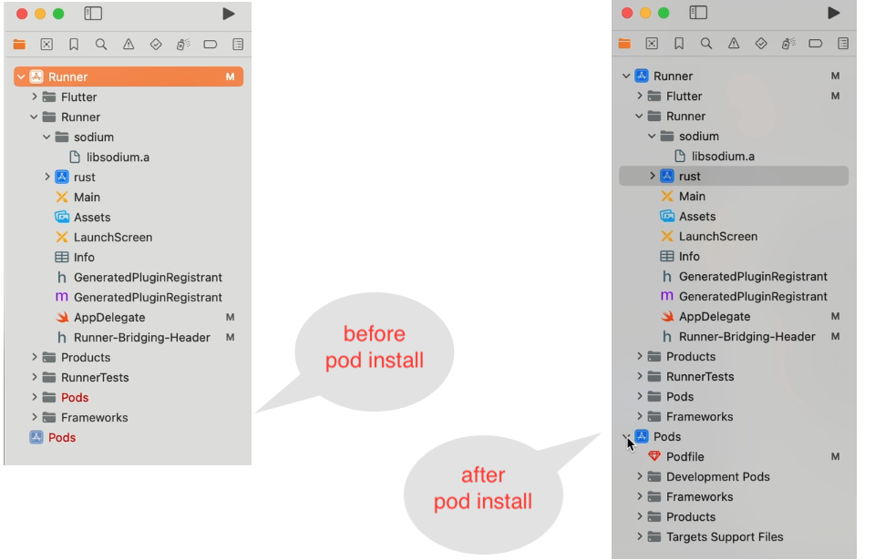
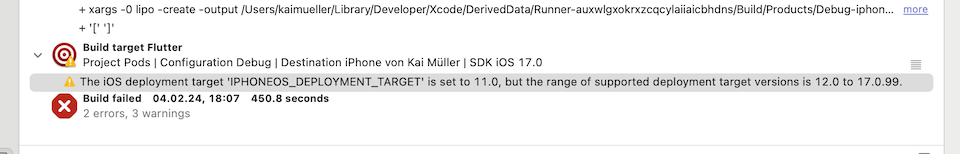
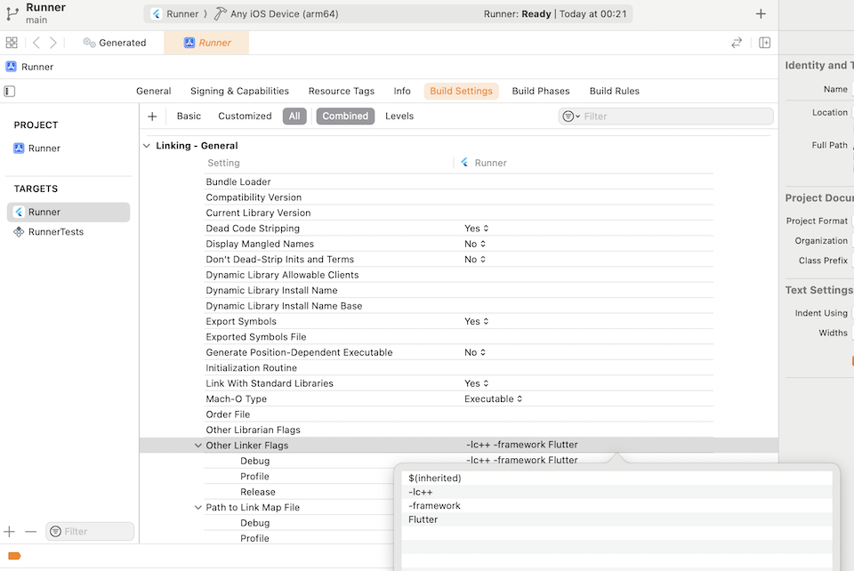

Building The Playground App for iOS using IOTA SDK and identity.rs.
This will be a tough nut to crack once again.
I presume the functionality of the -> Android app is operational. From the iOS standpoint, this implies that you've configured the Flutter Rust Bridge and incorporated both Rust and Dart code.
I am working on a MacBook Air (Apple M1) with macOS Sonoma 14.2.1 and Xcode 15.2. It's possible that the standard workflow works smoothly in other working environments.
Unfortunately, on my system, I faced challenges working with iOS. The libsodium-sys wrapper only built successfully when the libsodium library was pre-built as a static lib and manually added. The app only ran on my iPhone, not in the simulator (but refer to the little note at the bottom). It could only be launched from the Runner.xcworkspace project, not the Runner.xcodeproj. These were quite intricate issues that were very time-consuming to resolve.
Before you start working on iOS, I suggest you check your environment by running flutter doctor or flutter doctor -v for detailed information.
Based on my experience, updating your macOS, Xcode, and/or iOS versions can lead to unforeseen issues. Each update tends to bring about new problems, so it requires patience to set up your workspace properly. It's essential to make it a routine to verify that everything is configured correctly.
See example "CocoaPods installed but not working" in the section "Other Issues you might encounter" at the bottom of this page.
After the installation of the command, create the Rust Xcode project. Make sure to be in the rust/ directory. From the project's root folder you may switch into the right directory:
Little note: if libsodium.a can be built for the iOS Simulator using the Extended usage, perhaps the app will also strut its stuff on the iOS Simulator... I didn't follow this way after all my attempts... I am a bit tired...
Options to launch the app
a) Launch with flutter run
=> *Could fail when the compile process stops - you will get more detailed information when you launch the app from Xcode
b) Launch with Runner.xcodeproj
=> *Could fail because "shared_preferences_foundation" is not found
c) Launch with Runner.xcworkspace
=> *Could fail whenever libsodium-sys cannot be built; doesn't fail when you precompile libsodium.a as described in the subchapter
=> *Could fail when the Pods (dependencies) aren't yet installed
The first time around, the dependencies "path_provider_foundation" and "shared_preferences_foundation" are not yet installed. You will notice it in Xcode.

What "pod install" does
The straightforward method is to let Flutter handle the install. Switch to VS Code and launch the app using flutter run. You'll notice that before the Xcode build, the command pod install will be executed.
Throughout the Xcode build process, you may receive an alert indicating that the current iOS Deployment target is incorrect. Example:

Message about "iOS Deployment Target"
You should go through ALL targets (Runner, Rust, Pods -> path_provider_foundation, Pods -> shared_preferences_foundation) and adjust the default iOS Deployment Targets to your version of choice. In my situation, I often chose the latest available version 17.2 (after updating to Xcode 15.2 and installing iOS SDK 17.2), but it's up to you. It MUST be a version greater than v11.0.
After updating from Xcode v15.0.1 to Xcode v15.2, I encountered the following error:
Linking failed: linker command failed with exit code 1 (use -v to see invocation).
ld: warning: Could not find or use auto-linked framework 'CoreAudioTypes': framework 'CoreAudioTypes' not found.
The message indicating that the framework 'CoreAudioTypes' could not be found is highly misleading!
Potential solutions:
Option 1: Attempt to include the Linker Flags -lc++ and/or -framework Flutter (if they are not already present) in the build settings "Other Linker Flags" of the Runner target.

Solution for linking failure
Option 2: Rebuild the app from scratch. Surprisingly, this seemingly drastic step resolved the issue for me.